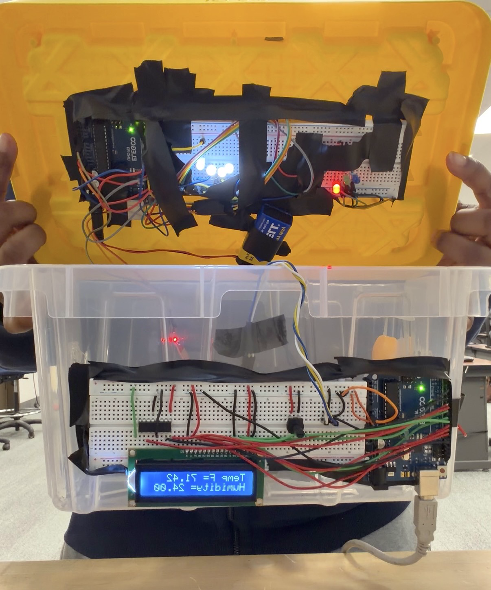
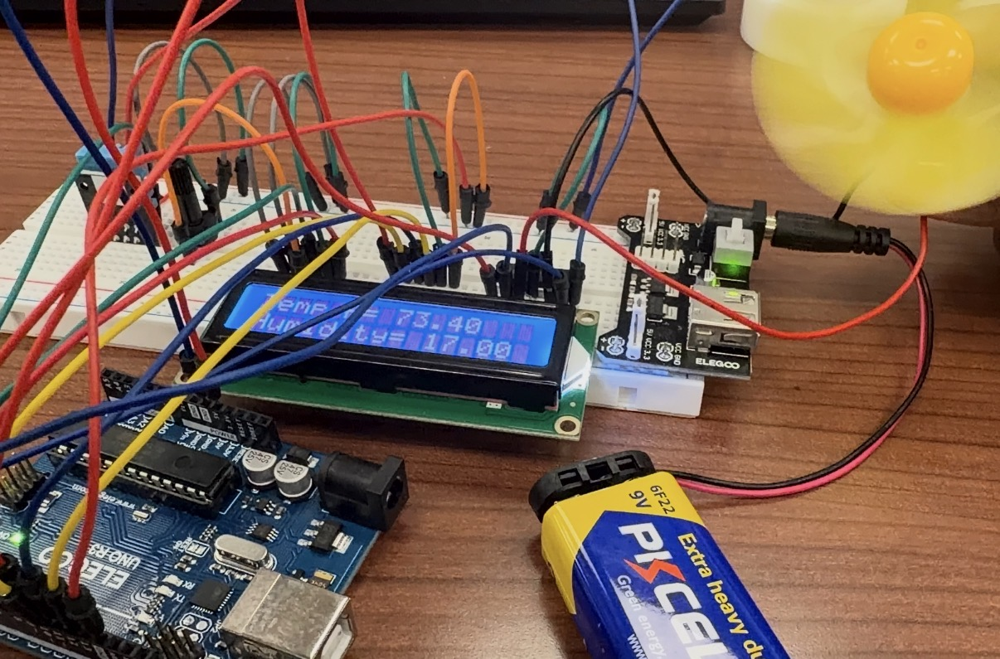

Automated Greenhouse Control System
An embedded control system I designed, built, and validated entirely on my own, starting with no coding background and teaching myself the software I needed to make it work.


What I built
A fully automated greenhouse control system that monitors and responds to its environment in real time. It integrates more than five sensing and actuation systems, including temperature and water-level sensors, an LCD display, an automated fan, and a programmable light cycle, all coordinated by a microcontroller running control logic I wrote.
What made it hard
When I started, I had no coding background. Rather than let that stop me, I taught myself Arduino and C++ from scratch because I wanted the system to actually work. The hardest lesson was trust: the sensor readings looked fine on the screen, but I put a multimeter and oscilloscope on the real signals anyway, and that is where I caught the problems the display was hiding.
How I validated it
I tested every signal with a multimeter and oscilloscope, analyzed the results, and iterated the design until the system performed reliably. I also used MATLAB to analyze the environmental data the system collected.
What I learned
A big lesson was mechanical design, every component has to live somewhere that does not interfere with the others. Packing it all in without thinking about each part's neighbors caused problems down the line, so I learned to plan each one's spot around clearance, fit, and how everything sits together.
← All projects